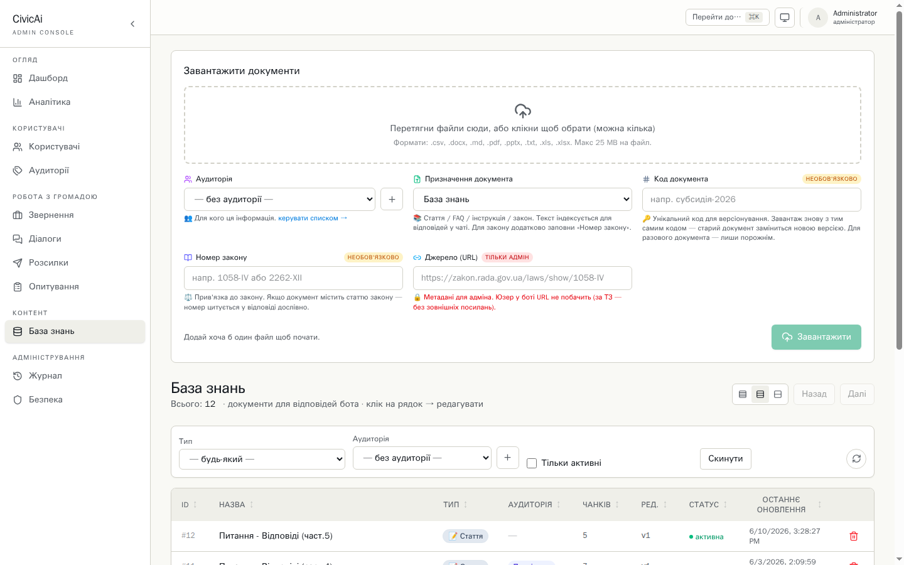
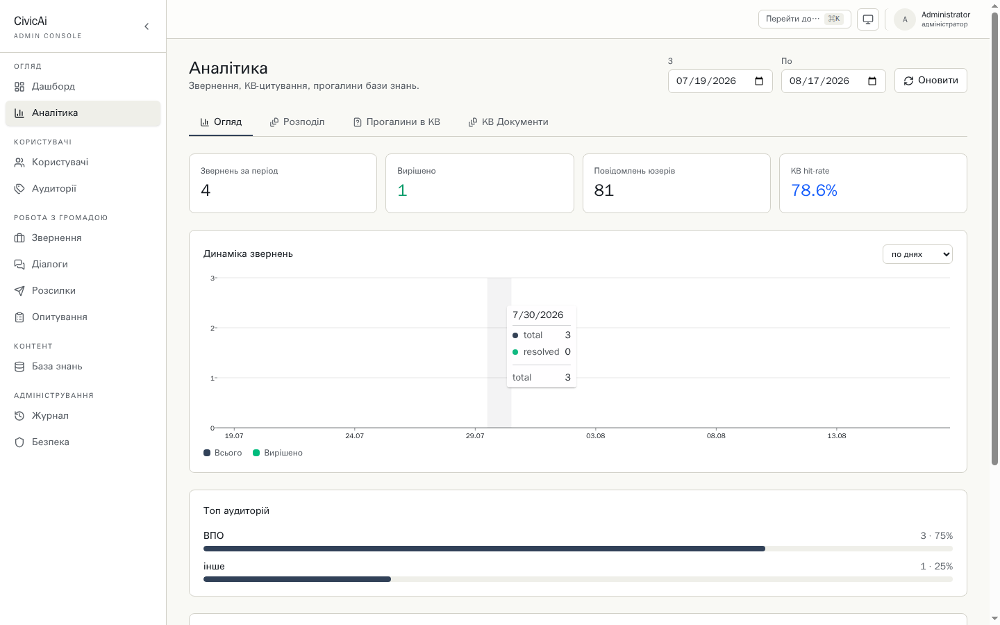
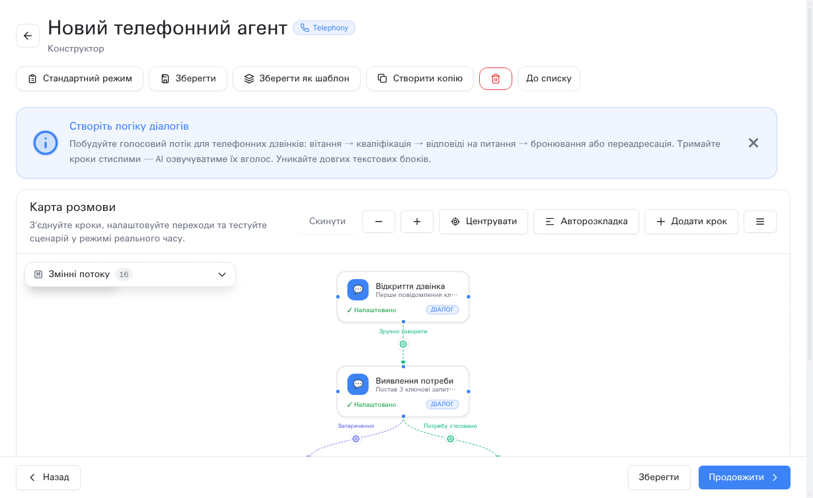
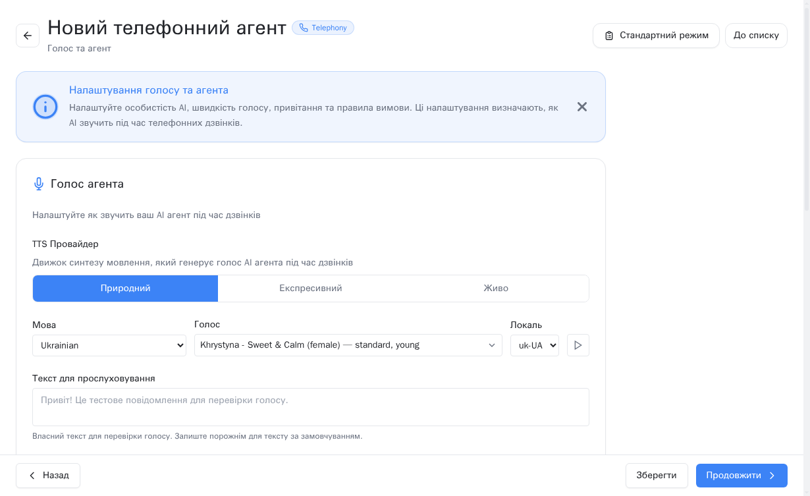
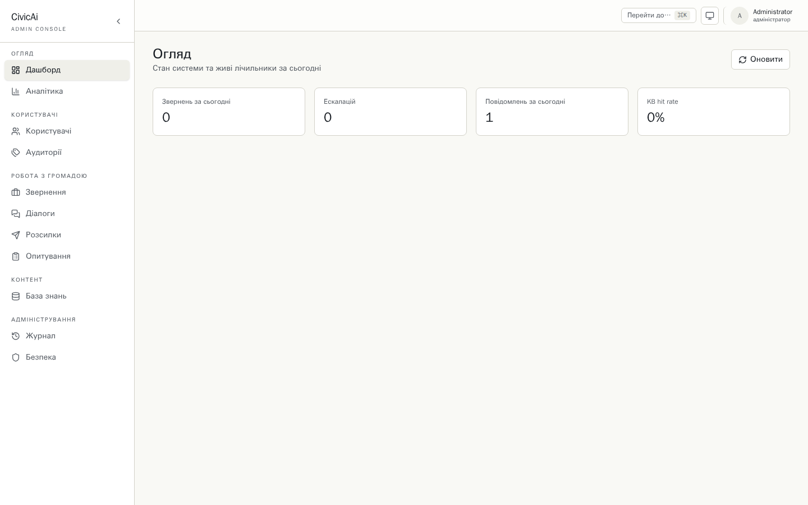
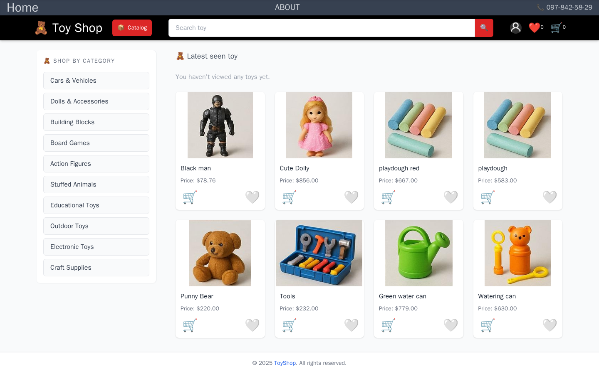

Backend Engineering
Scalable services, async APIs, real-time communication, data modelling, and secure integrations.
I’m Volodymyr, a Python Backend & AI Engineer focused on production-ready AI systems, high-performance APIs, voice assistants, and complex integrations.
My core expertise is Python backend development with a strong focus on AI. I design service architecture, build asynchronous APIs, integrate LLMs and external platforms, and take features from an early idea to a stable deployment.
I enjoy solving practical engineering problems: reducing latency, keeping real-time workflows responsive, making AI output safer, and creating clean interfaces between many moving parts.
Scalable services, async APIs, real-time communication, data modelling, and secure integrations.
LLM-powered assistants, RAG pipelines, knowledge bases, guardrails, and agentic workflows.
Low-latency voice systems and integrations across telephony, messaging, payments, and third-party APIs.
Production databases, caching, migrations, containers, testing, logging, and deployment workflows.
A selection of AI, backend, automation, and customer-facing systems.


An omnichannel platform for creating AI assistants and automating customer communication. Built backend architecture, RAG search, knowledge-base tools, guardrails, and asynchronous channel integrations.
Core stack: FastAPI, SQLAlchemy, PostgreSQL, RedisSearch, Redis Streams, TaskIQ, BGE-M3/TEI, OpenAI, Gemini, Svelte 5, WebSockets, S3, Docker.


AI-powered voice and text automation for customer conversations. Developed asynchronous dialogue processing, LLM and STT/TTS integrations, knowledge retrieval, guardrails, and low-latency telephony workflows.
Core stack: FastAPI, PostgreSQL, Redis, TaskIQ, Gemini, MCP, gRPC, Asterisk, FreeSWITCH, SIP, Google STT/TTS, Speechmatics, WebSockets, Sentry, Docker.
Multi-user personal AI platform across web, Telegram, and voice with durable streaming turns, memory, uploads, and MCP tools.
Core stack: Python 3.14, FastAPI, SQLAlchemy, Svelte 5, Connect-RPC, Protobuf, FastMCP, TaskIQ, PostgreSQL, Redis Streams, MinIO/R2, Traefik, Sentry.

Production civic AI platform providing grounded answers and real-time operator support across public communication channels.
Core stack: FastAPI, SQLAlchemy, PostgreSQL, Redis/RedisSearch, TaskIQ, BGE-M3, OpenAI, Gemini, WebSockets, S3, Docker.
Backend development and integrations for a commercial customer-facing digital product.
Digital workflows and backend automation supporting client communication and service operations.

Online store with product catalogue, cart, checkout, authentication, payments, and administration tools.
I’m open to Python Backend and AI Engineering opportunities.